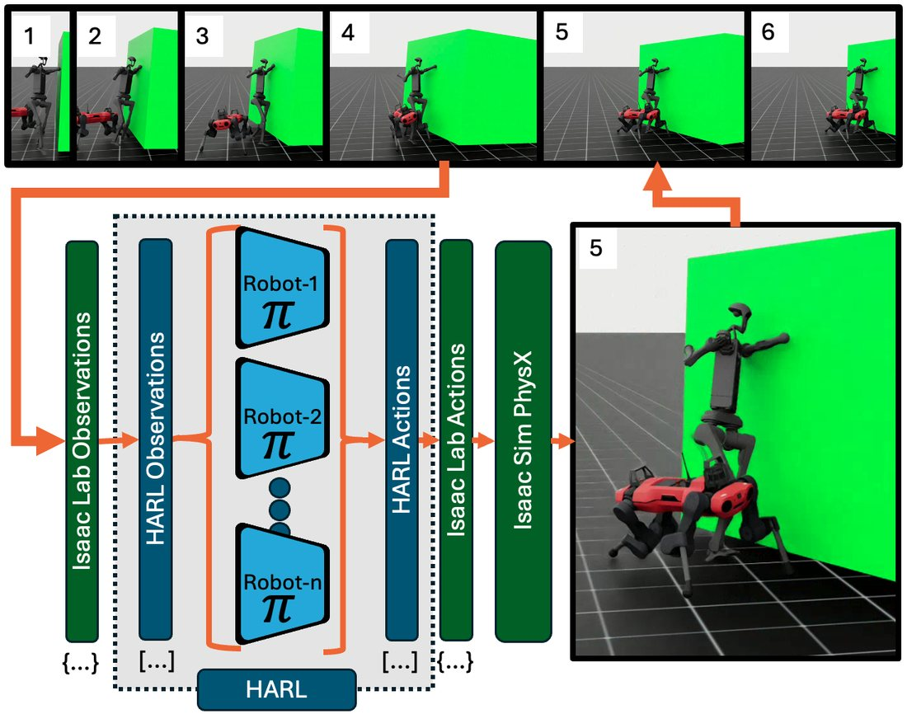
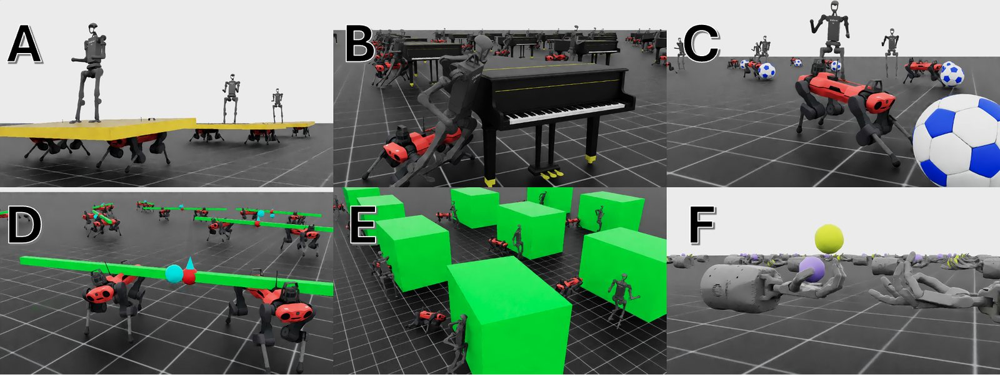
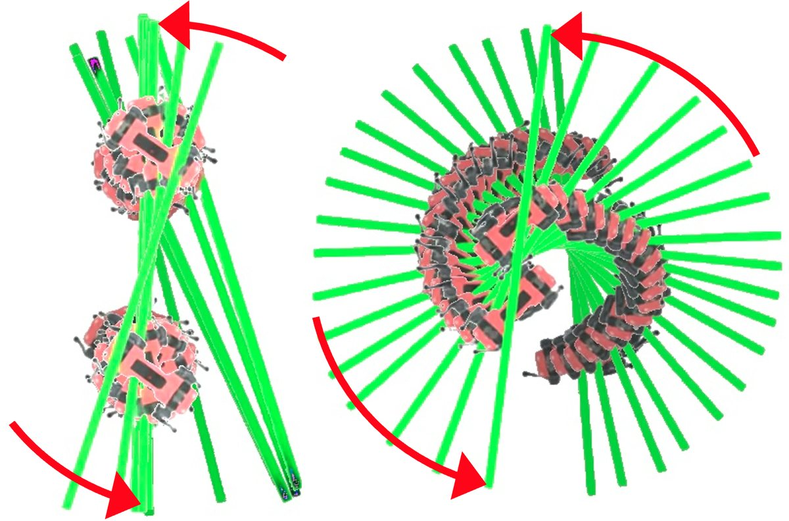
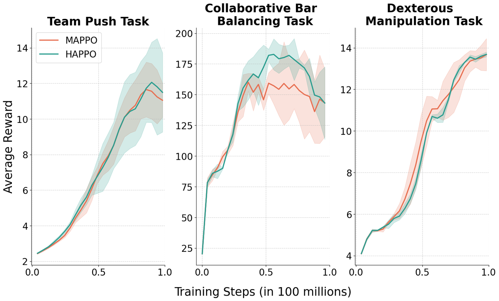

The problem
Real robot teams are rarely made of identical robots. A humanoid and a quadruped moving a heavy object together have different bodies, different sensors, and different actions. Training a team like that with reinforcement learning needs two things at once: fast, physically realistic simulation, and multi-agent algorithms that let each agent learn its own policy.
Most multi-agent RL research happens in game-like benchmarks with simplified physics, which don't transfer well to real robots. NVIDIA Isaac Lab has the opposite strength: GPU-parallel, high-fidelity physics that trains thousands of robots at once. But its multi-agent support was limited to two algorithms, IPPO and MAPPO, which assume either fully independent learning or a single policy shared across agents. Neither is built for a team whose members have different observation and action spaces.
What I built
I integrated the Heterogeneous-Agent Reinforcement Learning (HARL) library into Isaac Lab. HARL's algorithms, including HAPPO, HATRPO, and HAA2C, update agents one at a time, with each update accounting for the agents updated before it. That lets every robot keep its own policy without parameter sharing.

The two libraries made different assumptions almost everywhere, so most of the work was a translation layer inside HARL that kept the strengths of both:
- Data format: converted Isaac Lab's per-agent dictionaries of tensors into HARL's padded, concatenated tensors and back, every time data crossed between them.
- Mixed action spaces: wrote a wrapper that handles agents with different action sizes, without breaking support for identical agents.
- Environment setup: restructured HARL's environment loading so Isaac Lab's configuration system could create and configure environments.
- Sequential updates: adapted the training loop so HARL's agent-by-agent policy updates run against Isaac Lab's batched simulation.
- GPU performance: removed HARL's redundant copies between GPU and CPU memory, which were slowing down large-scale training.
Environments
To test the framework, our team built a set of multi-agent tasks that mix humanoids and quadrupeds and require physical cooperation. They also serve as templates for anyone building new multi-agent environments in Isaac Lab.

Coordination without communication
Agents never message each other. In the bar task, each ANYmal sees only its own velocity, IMU data, and a command for how the bar should move, and both are rewarded for how closely the bar's actual motion matches that command. Any teamwork has to be discovered through the physics of the shared bar.

Results
We trained MAPPO and HAPPO on three tasks: bar balancing, team push, and dexterous hands, averaging three random seeds each on a single RTX 4090. For the two locomotion tasks, each robot started from a pretrained single-agent walking policy and learned to cooperate from there.

Both algorithms learned stable, effective policies on all three tasks, confirming that heterogeneous agents can be trained in high-fidelity simulation while keeping Isaac Lab's scale. The two algorithms performed about the same on these tasks, which is part of the point: the framework makes it possible to test where heterogeneous methods actually help. My master's thesis picked up that question and found a task and training length where HAPPO pulls ahead.
What happened next
The framework became the base for the lab's follow-up work on adversarial teams, where heterogeneous robots compete in tasks like soccer and sumo (Peterson et al., 2025).